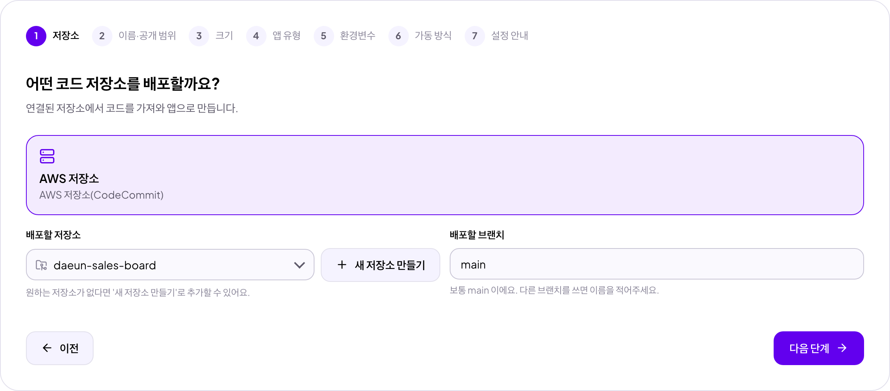
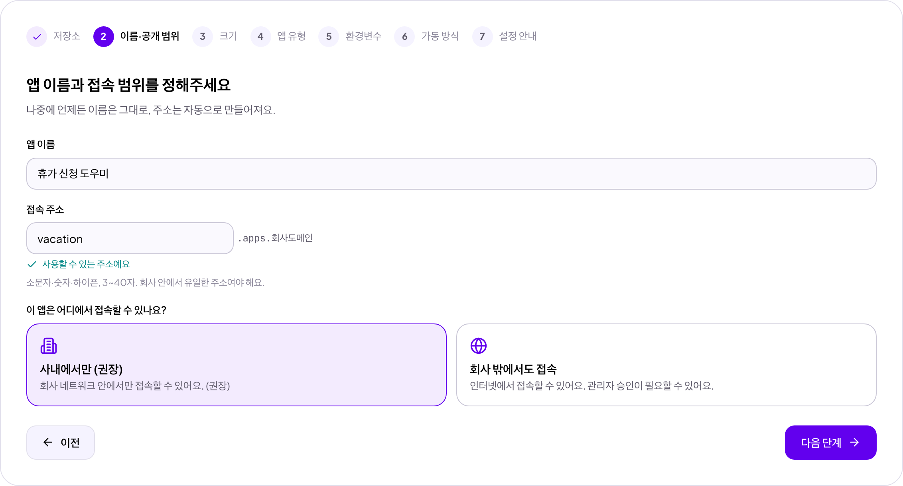
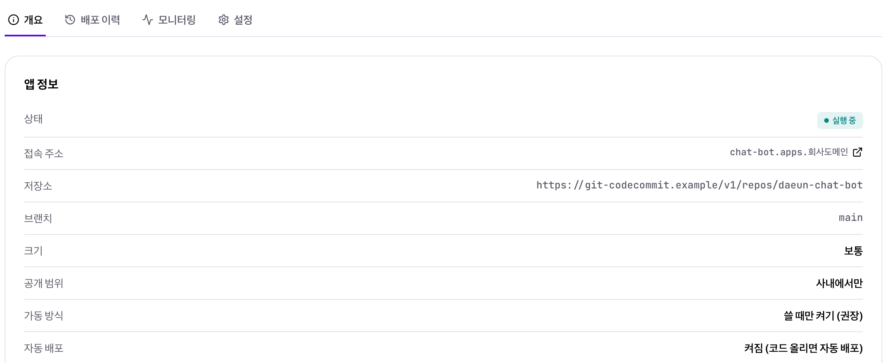
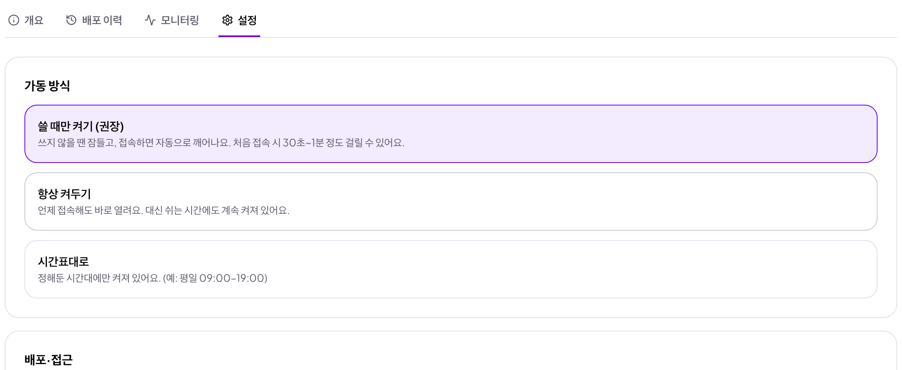
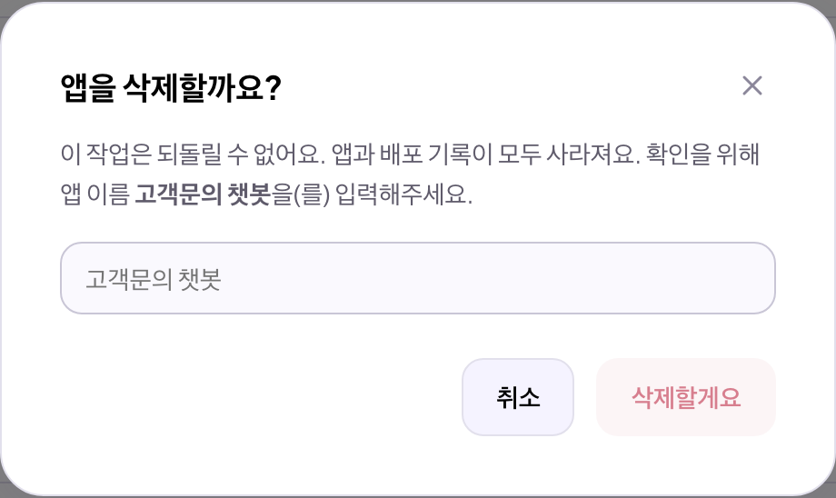
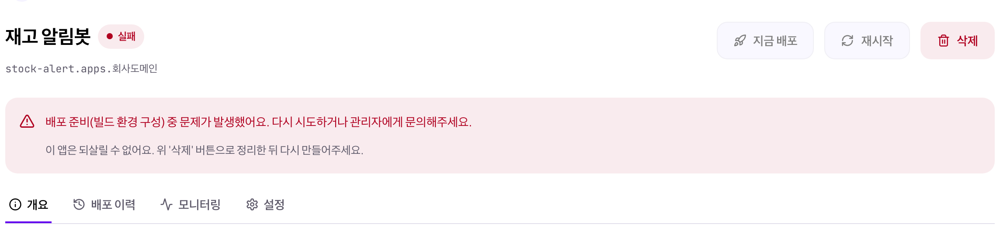
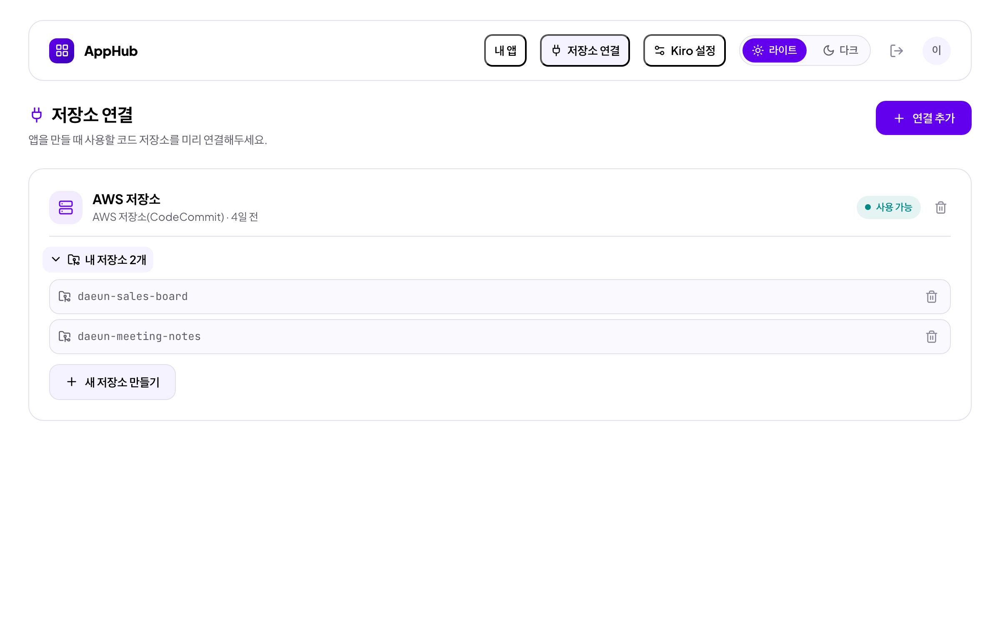

비개발자를 위한사내 앱 배포 플랫폼
Kiro로 만든 앱을 웹 화면 하나에서
저장소 연결 → 배포 → 상태 확인까지 처리합니다.

코드 저장소만 연결하면 빌드·배포·접속 주소·운영까지 플랫폼이 처리합니다
웹에서 생성·배포·모니터링
사용자 · 플랫폼 설정
infra/ CDKbackend/ Python 3.13frontend/ Reactkiro-config/ 배포 표준e2e/ 테스트
4가지 원칙과 코드상 구현 위치
기술 옵션 최소화
모든 인프라는 코드로
메인 서버 무부하
 API접수 · 조회
API접수 · 조회 Step Functions장기 작업
Step Functions장기 작업 CodeBuildcdk deploy
CodeBuildcdk deployAPI 서버 폴링 없음
친절한 실패
사용자는 6단계, 나머지는 플랫폼이 자동 처리
Mac/Windows zip 다운로드 → 프로젝트에 복사 → 커밋 검사 설치
Kiro가 배포 표준(Dockerfile, 8080, /health)에 맞춰 작성
AWS 저장소 / GitHub(구현 필요) / GitLab(구현 필요) 중 관리자가 허용한 것
 Code Repository
Code Repository7단계 마법사로 이름·주소·크기·유형·설정값·가동 방식 선택
검사 → 빌드 → 배포 → 확인. 진행 단계가 화면에 표시
 플랫폼 자동
플랫폼 자동주소 접속, 로그·지표 확인, 재시작·되돌리기·삭제
내 앱의 상태를 카드 한 장씩으로 표시
{서브도메인}.apps.{회사도메인} — 앱마다 고유userAppQuota (기본 5)7단계 질문으로 앱 하나를 정의




앱 하나를 개요 · 배포 이력 · 모니터링 · 설정 탭으로 관리




- 로그: CloudWatch Logs
/apphub/{stage}/app/{appId} - 지표:
GetMetricData1회 — ALB RequestCountPerTarget, ECS CPU/Memory - 잠자는 앱은 빈 시계열 반환
앱 관리 버튼 4개와 실제 동작


| 버튼 | 누르면 화면에서 | 내부에서 일어나는 일 |
|---|---|---|
| 1 지금 배포 | 확인창 없이 바로 접수 배포 이력에 '대기 중' 추가 | 앱 전용 파이프라인을 처음부터 다시 실행 → 최신 코드 가져오기 · 검사 · 새 이미지 빌드 · 배포. 몇 분 걸리고 배포 기록(수동)이 남음 |
| 2 재시작 | "앱을 다시 시작하고 있어요. 잠시 후(약 1분) 새로고침해 주세요." | 코드·이미지는 그대로 두고 실행 중인 서버만 새로 띄워 교체 (ECS forceNewDeployment). 빌드 없음, 배포 기록 없음. 잠자는 앱은 불가 |
| 3 삭제 | 앱 이름을 정확히 입력해야 '삭제할게요'가 눌림 | 앱이 '삭제 중'으로 바뀌고 실행 환경 → 빌드 환경 순으로 AWS 리소스 삭제. 이어서 비밀값 삭제, 접속 주소·로드밸런서 자리 반납, 앱 기록 삭제. 되돌릴 수 없음 |
| 4 되돌리기 | "다시 빌드하지 않아 빠르게 적용돼요" 확인창 | 그 배포 때 만든 이미지(커밋 SHA)가 남아 있는지 확인 → 그 이미지로 실행 환경만 다시 배포. 빌드를 건너뛰어 빠름. 이미지는 최근 5개만 보관 |


실패 원인을 7가지로 분류하고, Kiro에게 전달할 문장까지 안내


| 실패 유형 | 어디서 실패했나 | 화면 안내 (Kiro에게 할 말) |
|---|---|---|
| DOCKERFILE_MISSING | 정적 검사 — Dockerfile 없음 | "이 앱을 배포 표준에 맞게 준비해줘" 요청 후 push |
| DOCKERFILE_INVALID | 정적 검사 — 포트·금지 항목 | "배포 표준(8080 포트, /health 응답)에 맞춰줘" |
| BUILD_FAILED | 이미지 빌드 | 로그 마지막 부분을 복사해 "이 빌드 오류를 고쳐줘" |
| HEALTHCHECK_FAILED | 시험 실행 — 60초 안에 응답 없음 | "/health 경로에 200 응답을 추가해줘" |
| DEPLOY_FAILED | 실행 환경 배포 | 새 버전 적용 실패 → 이전 버전으로 자동 되돌림 |
| SOURCE_UNAVAILABLE | 코드 저장소 접근 | '저장소 연결' 메뉴에서 연결 상태 확인 |
| INTERNAL_ERROR | 그 외 | 플랫폼 내부 문제 — 관리자에게 문의 |
failureReason)
관리자만상세 원인 (failureDetail) — ARN·비밀값 가림, 500자 제한
코드 저장소 연결과 Kiro 배포 표준 설치를 화면에서 안내

저장소 연결
- AWS 저장소(CodeCommit) — 바로 사용 가능, 화면에서 새 저장소 생성
- 저장소 이름은
{소유자}-{이름}으로 자동 부여, 내 저장소만 보임 - GitHub · GitLab — 코드상 지원, 현재 설정에서 비활성

Kiro 설정 다운로드
- Mac · Windows용 zip 2종 — 웹에서 바로 다운로드
- 들어 있는 것: 배포 표준 지침(steering) · 커밋 검사(pre-commit) · 설치 스크립트
- 압축 풀기 → 프로젝트에 복사 → 설치 1회 → 이후 커밋마다 자동 검사
관리자는 사용자가 고를 수 있는 선택지 자체를 정의

admin 그룹만 사용 가능

3개 계층 — 플랫폼은 1회 설치, 파이프라인·런타임은 앱마다 생성


 Lambda · apiPython 3.13 / boto3
Lambda · apiPython 3.13 / boto3 DynamoDB단일 테이블 + GSI 2
DynamoDB단일 테이블 + GSI 2 Step Functionsprovision / deleteprovisionerCodeBuild · cdk deploy코드 저장소CodeCommit / GitHub / GitLabCodePipelineSource→Validate→Deployvalidate-build검사·빌드·스모크
Step Functionsprovision / deleteprovisionerCodeBuild · cdk deploy코드 저장소CodeCommit / GitHub / GitLabCodePipelineSource→Validate→Deployvalidate-build검사·빌드·스모크 ECR태그 = 커밋 SHAdeployCodeBuild · cdk deploy
ECR태그 = 커밋 SHAdeployCodeBuild · cdk deploy Route 53public / private zone
Route 53public / private zone


 CloudWatch유휴 알람 · 로그waker · sleep · restore잠자기 / 깨우기EB Scheduler시간표 start/stop
CloudWatch유휴 알람 · 로그waker · sleep · restore잠자기 / 깨우기EB Scheduler시간표 start/stopCDK 스택 4종 — 공유 2개는 관리자가 1회, 앱별 2개는 플랫폼이 생성 (+ 증설 시 alb)
- VPC 10.20.0.0/16 · 2 AZ · NAT 1
- 공유 ALB 2 (internet / internal) · 한도 시 증설 스택 추가
- 공유 ECS 클러스터
- 와일드카드 ACM · Route 53 zone 2
- SG 3 · Waker 계열 Lambda 3
- Cognito (admin 초대 전용)
- DynamoDB · API GW + Lambda
- Step Functions 2 · task Lambda 2
- SPA(public: CloudFront+S3 / private: 사내 ALB+ECS) · 자산 버킷
- provisioner CodeBuild · deploy-notify
- ECR (push 시 스캔, 최근 5개 유지)
- CodeBuild validate-build (privileged)
- CodeBuild deploy
- CodePipeline 3단계
- 아티팩트 버킷 (30일 만료)
- ECS 서비스·태스크 (프리셋 크기)
- Target Group :8080 /health
- 리스너 규칙 (host-header)
- Route 53 A alias · Task Role
- 유휴 알람 · Scheduler (모드별)
/apphub/{stage}/network/*, /platform/*bin/apphub.ts — 기본은 플랫폼 모드, -c appId + appStackKind로 앱 스택 합성apphub-{stage}-*, stage = dev | prod. 앱 삭제 = runtime → pipeline 순 삭제공개 범위별 공유 ALB, 앱은 호스트 이름으로 구분
Public hosted zone사내 조회용 private zone에도 등록
internet-facing ALB0.0.0.0/0유일하게 허용된 전체 개방 SG
Private hosted zoneinternal ALB--internal-cidrs미지정 시 VPC CIDR
HTTPS :443 리스너*.{appsDomain} ACM 1개 공유기본 동작 404 "No app for this host" · :80 → 301 HTTPS
{sub}.{appsDomain} → [선택] authenticate-cognito → forward/health 200 · 15s 간격태스크 SG: 8080 ← ALB SG 참조만
sample-streaming로 검증)cognitoProtect — 인터넷 공개 앱은 기본 켜짐. 잠자는 중에도 인증 동작 유지ruleCount 관리사내 접속 대역은 설치 시
--internal-cidrs "10.0.0.0/8,…"로 지정 (미지정 시 VPC 대역만)
Lambda 하나가 38개 API 경로 처리, 데이터는 DynamoDB 단일 테이블
/{proxy+} ANY→Cognito authorizer→Lambda handler.py→router
- OPTIONS preflight는 인증 전에 응답, CORS는 콘솔 origin(
console.{appsDomain})만 허용 - 모든 예외 →
{error:{code,message}}형식 - 소유자 검사: 남의 앱은 403, 없는 앱은 404
/deploy · /rollback · /restart
/deployments · /logs · /metrics
/presets · /permission-templates
/subdomains/check · /providers
/connections(/:id/repos)
/admin/presets
/admin/permission-templates
/admin/users
/admin/apps (/:id/stop)
/admin/alb-registry
| 엔터티 | PK | SK |
|---|---|---|
| App | APP#{appId} | META |
| Deployment | APP#{appId} | DEPLOY#{ts} (TTL 90일) |
| 저장소 연결 | USER#{userId} | CONN#{connId} |
| CodeCommit 레포 | USER#{userId} | CCREPO#{name} |
| 서브도메인 예약 | SUBDOMAIN#{sub} | RESERVATION |
| 프리셋 · 권한 · 설정 | CONFIG | PRESET# · PERM# · SETTINGS |
| ALB · 규칙 카운터 | CONFIG | ALB#{arn} · RULEPRIORITYSEQ |
attribute_not_exists(PK) 조건부 쓰기 (경합 안전)"앱 만들기" 클릭부터 접속 가능까지 10단계
POST /apps → 검증 체인(서브도메인·허용 저장소·프리셋·연결 상태·한도) → 서브도메인 예약, 비밀값 저장
api LambdaProvisionApp 실행. 실행 이름 = appId → 중복 실행 방지
Step Functions공개 범위로 ALB 선택, 규칙 우선순위 원자 증가, ruleCount +1 (재실행 시 기존 값 재사용)
DynamoDBprovisioner 빌드 시작: cdk deploy …-pipeline (ECR · CodeBuild 2 · CodePipeline)
CodeBuild30초 간격 확인. 실패 → FinalizeFailure → FAILED
Wait / Choice파이프라인 생성 시 AWS가 자동 실행. FirstDeploy는 의도적 no-op (이력 중복 방지)
CodePipeline정적 검사 → docker build → /health 스모크 → ECR push (태그 = 커밋 SHA)
validate-build · ECRcdk deploy …-runtime: ECS 서비스 · TG · 리스너 규칙 · DNS · 알람/스케줄
파이프라인 이벤트 → 배포 이력 갱신. 성공 시 CREATING→ACTIVE, RUNNING
deploy-notifyhttps://{sub}.apps.{도메인} 대시보드에 "실행 중"
Route 53 · ALB생성·삭제는 State Machine 2개로 — 각 단계는 멱등, 실패는 한 곳에서 처리
step 필드로 분기 (orchestration/provision.py, delete.py)Source → ValidateBuild → Deploy, 실패 지점이 곧 실패 유형
- CodeCommit 또는 CodeConnections
- 자동 배포 켜짐: push 트리거
- 꺼짐: "지금 배포" 버튼으로만
| 1 정적 검사 | 플랫폼 검증기(S3에서 받음): Dockerfile 존재·EXPOSE 8080·금지 항목 | DOCKERFILE_MISSING DOCKERFILE_INVALID |
| 2 빌드 | docker build | BUILD_FAILED |
| 3 스모크 | docker run → curl /health 2초×30회(60초), 200 기대 | HEALTHCHECK_FAILED |
| 4 푸시 | ECR push, 태그 = 커밋 SHA → image-tag.json |
- DynamoDB에서 앱·프리셋·권한 템플릿 읽기
- 스택 존재 여부로 첫 배포 판단 → desiredCount는 첫 배포에만 지정 (잠자기 상태 보존)
cdk deploy …-runtime, 실패 시 CloudFormation 롤백- DEPLOY_FAILED
-runtime 스택만 CloudFormation쓰지 않으면 태스크 0개, 첫 요청이 들어오면 자동 기동
유휴 알람: 타깃당 요청 < 1, 5분 × 3회 (15분)
또는 시간표 종료 · 관리자 재우기
알람 이름 접두어 apphub-{stage}-app- 매칭 (공유 규칙 1개)
① desiredCount → 0
② 리스너 규칙 forward 대상 → waker TG
③ runtimeState = SLEEPING
{sub}.apps… 접속 → 규칙이 waker TG로 전달
Host → 서브도메인 → appId → desiredCount = min(≥1) · WAKING
항상 200 대기 페이지 (5초 자동 새로고침)
ECS Task State Change 이벤트 (group에서 appId 추출)
forward 대상 → 앱 TG 복귀
runtimeState = RUNNING

ecs:updateService만 호출, 규칙 복귀는 restore가 처리가동 방식에 따라 runtime 스택에 생성되는 리소스가 달라짐
| 쓸 때만 켜기 권장 on-demand | 항상 켜두기 always-on | 시간표대로 schedule | |
|---|---|---|---|
| 화면 설명 | 쓰지 않을 땐 잠들고, 접속하면 자동으로 깨어남 | 언제 접속해도 바로 열림 | 정해둔 시간대에만 켜짐 (예: 평일 09:00–19:00) |
| 유휴 알람 (15분) | 생성 | 없음 | 생성 |
| EventBridge Scheduler | 없음 | 없음 | start + stop (요일·시각·Asia/Seoul) |
| 첫 접속 지연 | 잠든 상태면 30초 ~ 1분 | 없음 | 시간 외 접속 시 30초 ~ 1분 |
| 유휴 시간 비용 | 태스크 0개 | min 태스크 상시 | 시간 외 태스크 0개 |
| 관리자 재우기 | 가능 | 가능 (force) | 가능 |
infra/lib/constructs/app-runtime.ts— 알람 · Scheduler 조건부 생성- Scheduler stop은 sleep Lambda 호출 (규칙 전환까지 수행)
- 요일 변환: 화면 0–6 → cron 1–7
ScheduleEditor.tsx— 요일 1개 이상 · 시각 형식 검증
같은 배포 표준을 작성 · 커밋 · 빌드 시점에 세 번 검사
.kiro/steering/deployment-standard.md (inclusion: always) — Kiro가 코드를 만들 때 항상 따르는 규칙
POSIX sh + grep. 실패 항목을 모두 모아 한국어로 출력하고 커밋 중단
validator/dockerfile.py + 실제 컨테이너 스모크 테스트. 최종 판정
validate-build 단계| 검사 항목 | ① steering | ② pre-commit | ③ 플랫폼 | 위반 시 |
|---|---|---|---|---|
| 저장소 루트에 Dockerfile | ✓ | ✓ | ✓ C1 | DOCKERFILE_MISSING |
| EXPOSE 8080만 (8080/tcp 허용) | ✓ | ✓ | ✓ C2 | DOCKERFILE_INVALID |
| 금지: --privileged · docker.sock · host network · --cap-add · host bind mount | ✓ | ✓ | ✓ | DOCKERFILE_INVALID |
| GET /health → 200 (기동 후 60초 이내) | ✓ | — | ✓ 스모크 | HEALTHCHECK_FAILED |
| non-root USER | ✓ | — | 경고 | 차단하지 않음 |
비밀키 커밋 차단 (AKIA…, PEM private key) | ✓ | ✓ | — | 커밋 중단 |
| 무상태 · stdout 로그 · 비밀값은 환경변수 | ✓ | — | — | 가이드 |